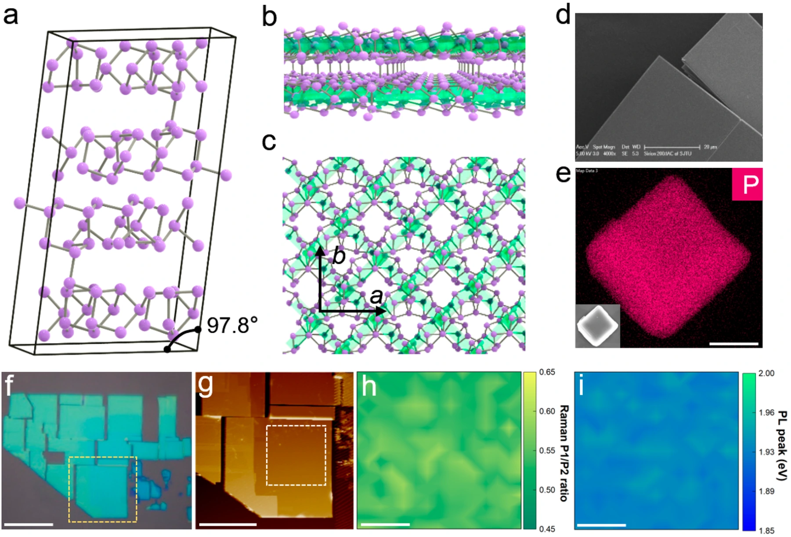
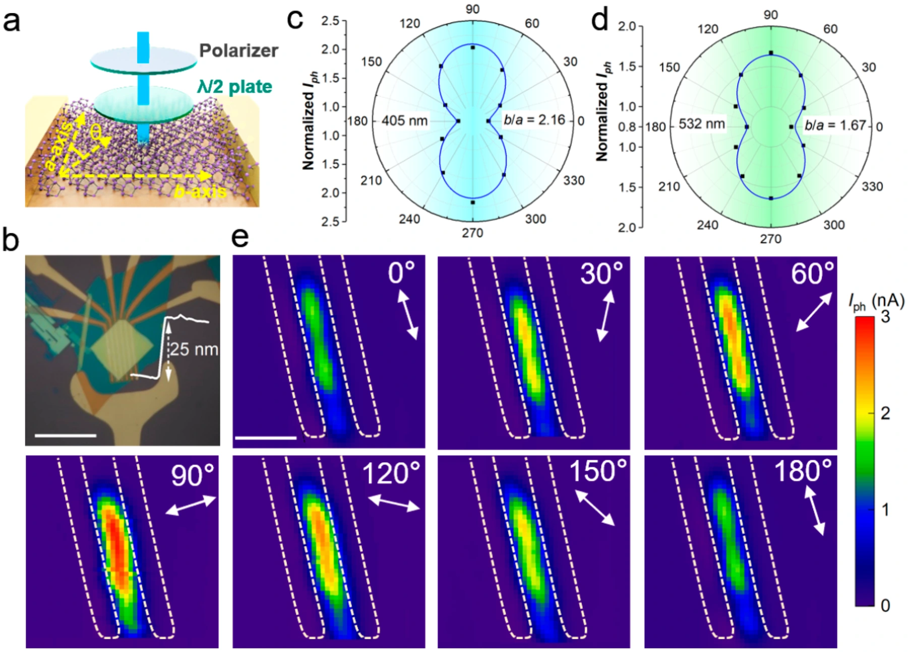
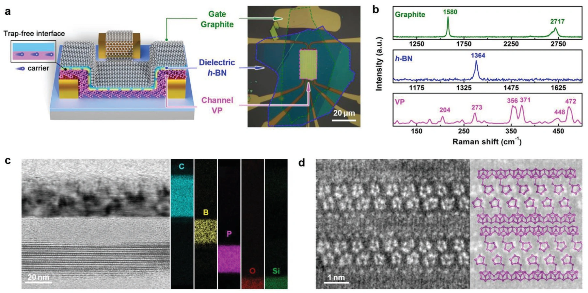
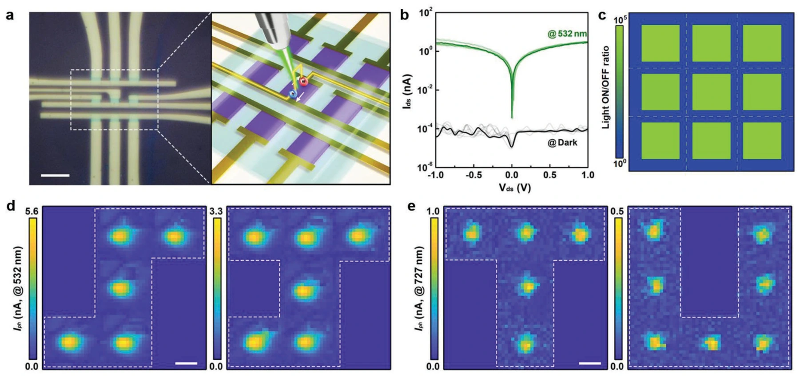
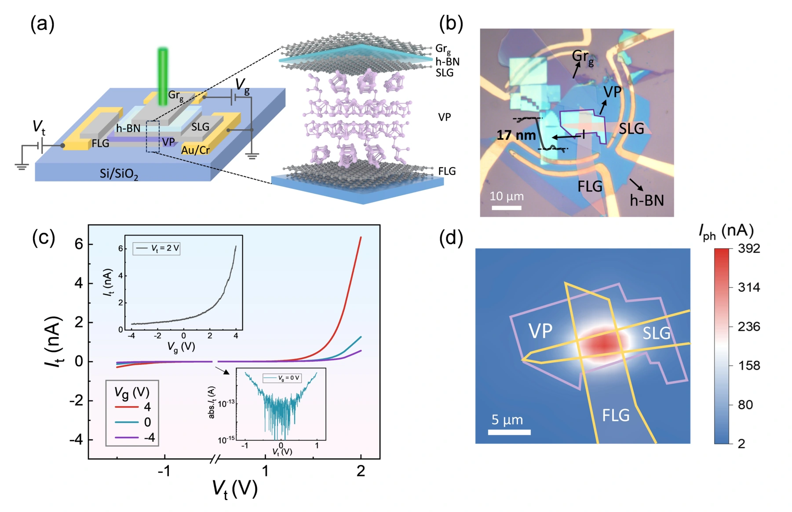
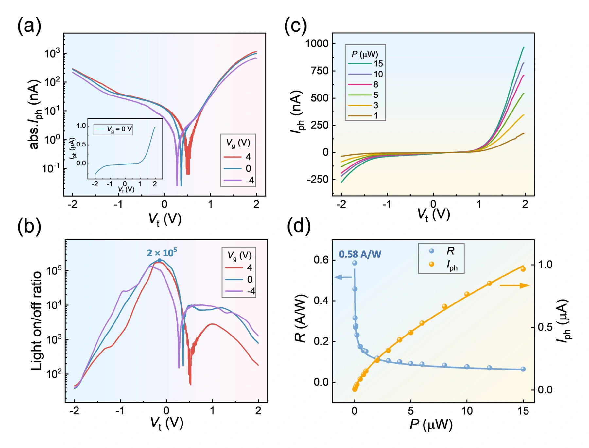

低对称紫磷：从晶体结构到偏振感知
Chen et al. · Nano Letters · 2023
紫磷独特的管状交联晶体结构带来方向依赖的光学和光电性质。研究结合晶体表征、偏振光谱与范德华光晶体管，揭示低对称结构与面内各向异性之间的联系。
器件面内光电流各向异性比超过 10；405 nm 偏振探测的二色比达到 2.16，为偏振识别与多维视觉感知提供低维材料基础。


高质量范德华界面：低暗电流与高对比度成像
Chen et al. · Advanced Optical Materials · 2024
通过堆叠 graphite / h-BN / 紫磷，构筑高质量范德华界面，减少界面陷阱与环境相关表面态对电荷输运的影响，实现低背景噪声光探测。
室温暗电流低至 80 fA，光开关比超过 10⁵；进一步构建 3 × 3 紫磷探测阵列，在不同波长和光功率下展示高对比度图像感知。


垂直紫磷隧穿结：缩短输运路径与增强光探测
Liu et al. · Optics Letters · 2025
将紫磷薄片夹在单层与少层石墨烯电极之间，构建栅控垂直隧穿结。光生载流子由面内长距离输运转向垂直输运，缩短收集路径并改善光电响应。
室温 532 nm 测试中，通过不同偏压和栅压条件分别获得最高 0.58 A/W 的响应度与约 2 × 10⁵ 的光开关比，展示结构设计对载流子收集和背景电流的调控。


相关论文
- Strong In-Plane Optoelectronic Anisotropy and Polarization Sensitivity in Low-Symmetry 2D Violet PhosphorusNano Letters · 2023 · DOI: 10.1021/acs.nanolett.3c02951
- An Ultrahigh-Contrast Violet Phosphorus Van der Waals PhototransistorAdvanced Optical Materials · 2024 · DOI: 10.1002/adom.202301399
- Sensitive photodetection in a violet phosphorus tunnel junctionOptics Letters · 2025 · DOI: 10.1364/OL.561784